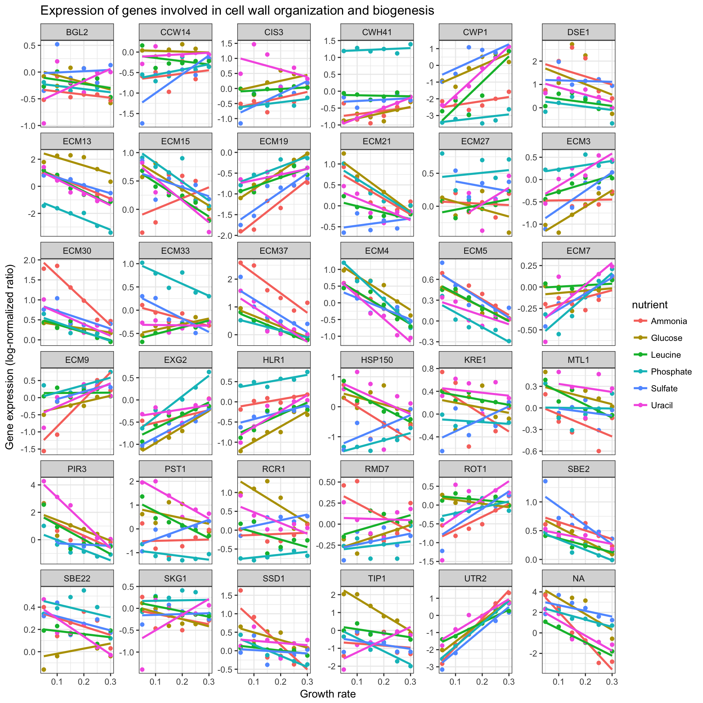

(Refer back to the main RMarkdown lesson).
INSTRUCTIONS: Following the horizontal lines below, beginning with the Introduction heading, is a report that is produced from an RMarkdown document. Write an RMarkdown document and “Knit HTML” to produce a report similar to what you see below.
fixed width text come through in your document. Fixed width text is produced by enclosing text in backtick characters (the key above the tab key, to the left of the number 1 key on most keyboards).fig.width and fig.height to 10.data/ directory relative to the current working directory.THE REPORT THAT YOU SHOULD PRODUCE FOLLOWS BELOW.
This data is a tidy version of a gene expression dataset from Brauer et al. Coordination of Growth Rate, Cell Cycle, Stress Response, and Metabolic Activity in Yeast (2008) Mol Biol Cell 19:352-367. This data is from a gene expression microarray, and in this paper the authors are examining the relationship between growth rate and gene expression in yeast cultures limited by one of six different nutrients (glucose, leucine, ammonium, sulfate, phosphate, uracil). If you give yeast a rich media loaded with nutrients except restrict the supply of a single nutrient, you can control the growth rate to any rate you choose. By starving yeast of specific nutrients you can find genes that:
Below we will load the dataset and proceed with a very basic analysis.
After loading the dplyr and readr libraries, use readr’s read_csv() function to read the data directly from the web, assigning it to an object in our workspace called ydat.
library(dplyr)
library(readr)
ydat <- read_csv("data/brauer2007_tidy.csv")Which biological processes have the most genes? That is,
ydat %>%
group_by(bp) %>%
summarize(n=n_distinct(symbol)) %>%
arrange(desc(n)) %>%
head(20)## # A tibble: 20 x 2
## bp n
## <chr> <int>
## 1 biological process unknown 269
## 2 protein biosynthesis 182
## 3 protein amino acid phosphorylation* 78
## 4 protein biosynthesis* 73
## 5 cell wall organization and biogenesis* 64
## 6 regulation of transcription from RNA polymerase II promoter* 49
## 7 nuclear mRNA splicing, via spliceosome 47
## 8 DNA repair* 44
## 9 aerobic respiration* 42
## 10 ER to Golgi transport* 42
## 11 endocytosis* 41
## 12 mRNA-nucleus export* 41
## 13 response to stress* 39
## 14 protein-vacuolar targeting* 37
## 15 cell wall organization and biogenesis 36
## 16 rRNA processing* 35
## 17 ubiquitin-dependent protein catabolism 35
## 18 ER to Golgi transport 33
## 19 35S primary transcript processing* 30
## 20 chromatin silencing at telomere* 29Create a new object that contains the data filtered down to the 36 genes involved in cell wall organization and biogenesis. Plot a scatter plot of the expression versus rate, color-coding by the limiting nutrient, showing a different gene in each panel, where the y-axis scale in each panel can vary from panel to panel.
# First load the ggplot2 library
library(ggplot2)
cwob <- ydat %>% filter(bp=="cell wall organization and biogenesis")
ggplot(cwob, aes(rate, expression, color = nutrient)) +
geom_point() +
geom_smooth(method = "lm", se = FALSE) +
facet_wrap(~symbol, scales="free_y") +
theme_bw() +
xlab("Growth rate") +
ylab("Gene expression (log-normalized ratio)") +
ggtitle("Expression of genes involved in cell wall organization and biogenesis")
THE REPORT YOU SHOULD PRODUCE ENDS HERE